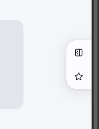
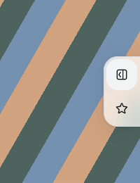
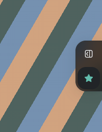
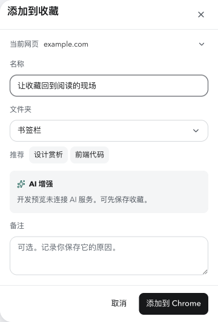
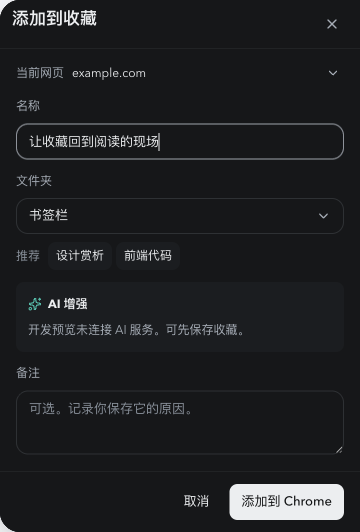
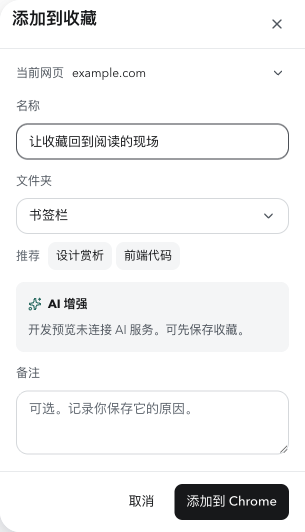
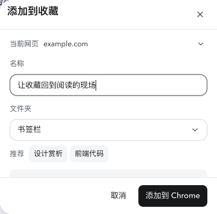
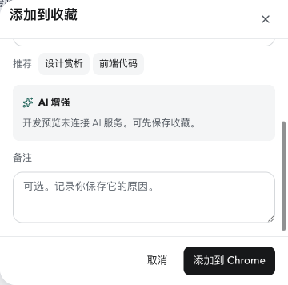
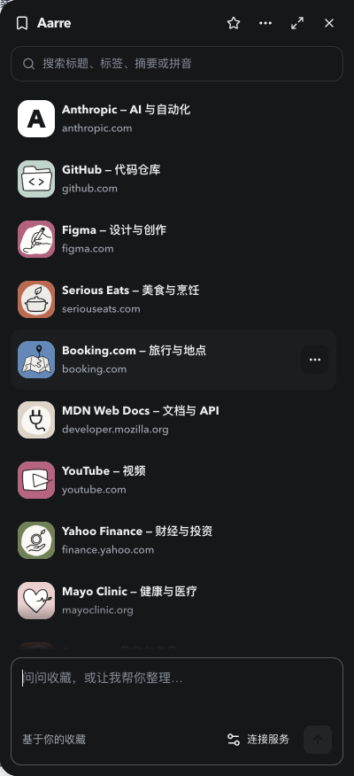

这轮围绕你提出的 7 项问题，修订右侧入口、收藏表单的开合和旧连接恢复。以下 10 张截图展示当前界面，点击可查看原尺寸。
完整验收记录 · 扩展安装包

44 × 44 按钮；16px 圆角。

外框 20px，与按钮保持 4px 嵌套间距。

实心星标；保留半透明与背景模糊。

直接展开，无返回箭头；取消或关闭收起整个菜单。

相同尺寸与层次。

实际可用宽度 305px，正文与按钮没有横向溢出。

面板高度 356px；保存操作固定可见。

正文可滚动至备注；滚动条无底轨，不挤占内容。
外框圆角 20px，底部保留对话输入框。

细节、文字层级和间距保持一致。
截图来自正式 UI 与隔离开发数据；本地预览未连接 AI。真实 Chrome 已另外验证：直接收藏与取消、更新后的旧入口替换、连续重载、网页输入保留、新页面常驻，以及真实书签增删后的星标状态。测试书签已移除，未发送的测试对话已清除。
首开逐帧记录：36 帧，其中 7 帧可见表单；重开：10 帧，其中 3 帧可见表单。两组均未出现可见首页。Chrome 内置页等禁止扩展注入的页面由完整收藏库承接。Chrome 内容脚本说明。